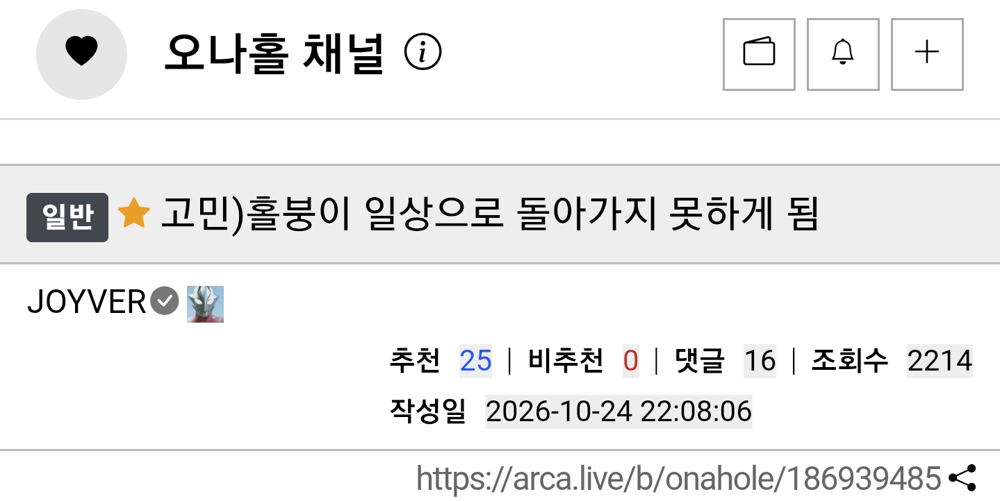
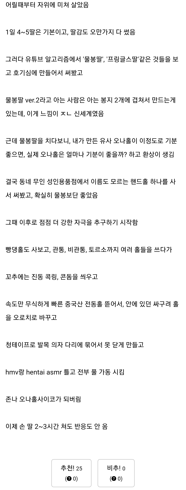
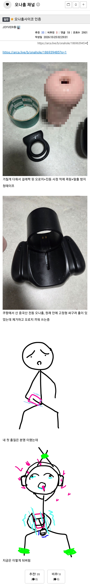
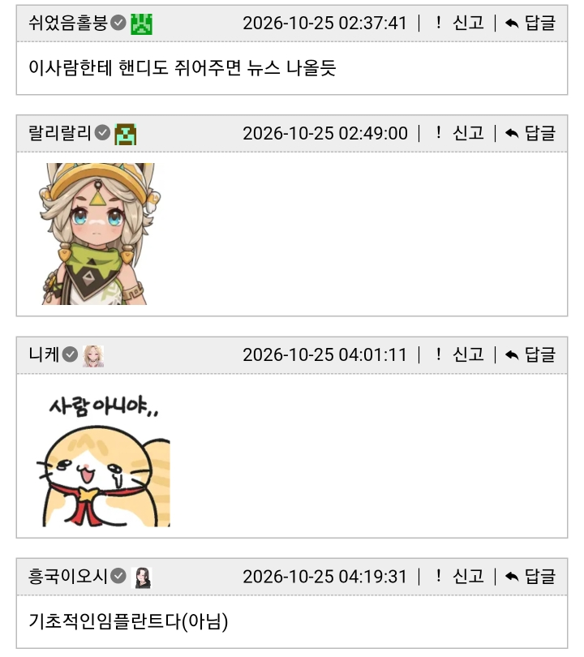
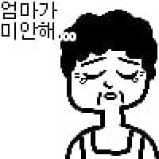

아카라이브 오나홀 채널 펌
오나홀은 모자이크 처리 함




저러면 나중에 어케 구속 품?
누가 풀어줌?
풀려나선 안 돼.
저상태로 다른 사람에게 보여지는것까지 해야 완성임

꼭 풀어야 할까...?
엄마
저정도면 그냥 음지업소로 가라...
자건 물리적 자극에 미친 거라서 그걸로 해결이 안될걸..
근데 관통형은 어케 쓰냐
안에 젤이랑 ㅈㅇ 같은거 반대편으로 다 빠져나와서 지저분해지는데
아다 스매셔;;;
아니 미친ㅋㅋㅋㅋ
ㅋㅋㅋㅋㅋㅋㅋ

자작추...
저 정도면 역치값 돌릴 수 있나..?
금딸 1년하면 될듯
개붕아...
방구석에서 혼자 푼다자나 놔둬 다른 사람한테 피해 안주는게 어디여
모자이크의 의미가 없는거같아요.....
현타라는게 없는 상남자고만
딸스택 요원 바즈를 불러라
저거 끝까지가면 sr6라는 6축 딸딸이기계 + vam이라는 시뮬레이션형 야겜 + vr까지끼는 최종형태까지 가더라
예전에 저거의끝판왕은 어디일까 궁굼해서 찾아봄
그나마 전립선 개발까지 안넘어간게 다행이려나
지루는 둘째치고 성기 괜찮나 저거 ㄷㄷ?
유두딸까진 아직 도달못했나보네
엉덩이는 아직 멀쩡하구나..
맴스택을 불러!
딸스택을 불러라!
이런 건 정신과 가서 치료를 받아야 할듯...